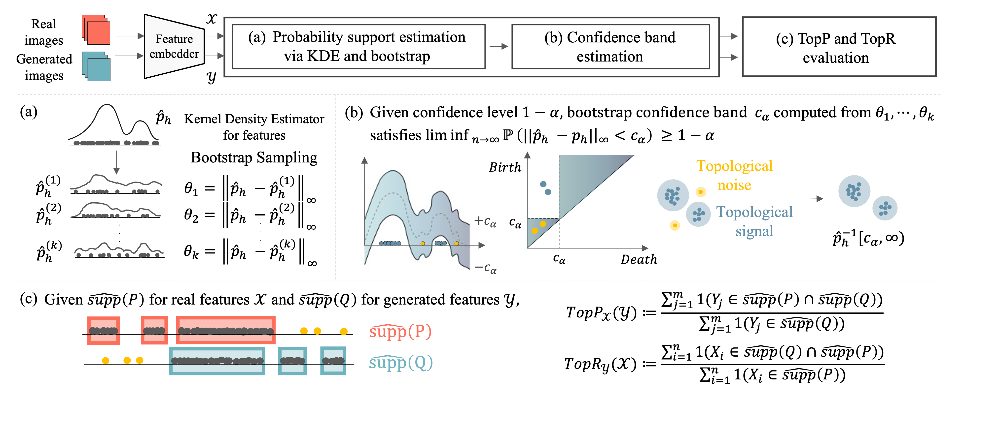

Abstract
We propose a robust and reliable evaluation metric for generative models by introducing topological and statistical treatments for rigorous support estimation.
Existing metrics, such as Inception Score (IS), Frechet Inception Distance (FID), and the variants of Precision and Recall (P&R), heavily rely on supports that are estimated from sample features. However, the reliability of their estimation has not been seriously discussed (and overlooked) even though the quality of the evaluation entirely depends on it.
In this paper, we propose Topological Precision and Recall (TopP&R, pronounced 'topper'), which provides a systematic approach to estimating supports, retaining only topologically and statistically important features with a certain level of confidence. This not only makes TopP&R strong for noisy features, but also provides statistical consistency. Our theoretical and experimental results show that TopP&R is robust to outliers and non-independent and identically distributed (Non-IID) perturbations, while accurately capturing the true trend of change in samples. To the best of our knowledge, this is the first evaluation metric focused on the robust estimation of the support and provides its statistical consistency under noise.
Overview
Experiment for simultaneous mode dropping
Toy dataset case
Comparison of evaluation metrics for (a) sequential and (b) simultaneous mode-drop scenarios.
The horizontal axis shows the concentration ratio on the distribution centered at
.
Real dataset case
Comparison of evaluation metrics under sequential and simultaneous mode dropping scenario with Baby ImageNet.
Experiment for evaluating various generative models
Generative models trained on CIFAR-10 are ranked by FID, KID and MTD, and F1-scores
based on TopP&R, D&C and P&R, respectively. The
are embedded with InceptionV3, VGG16, and SwAV. The number inside the parenthesis
denotes the rank based on each metric.